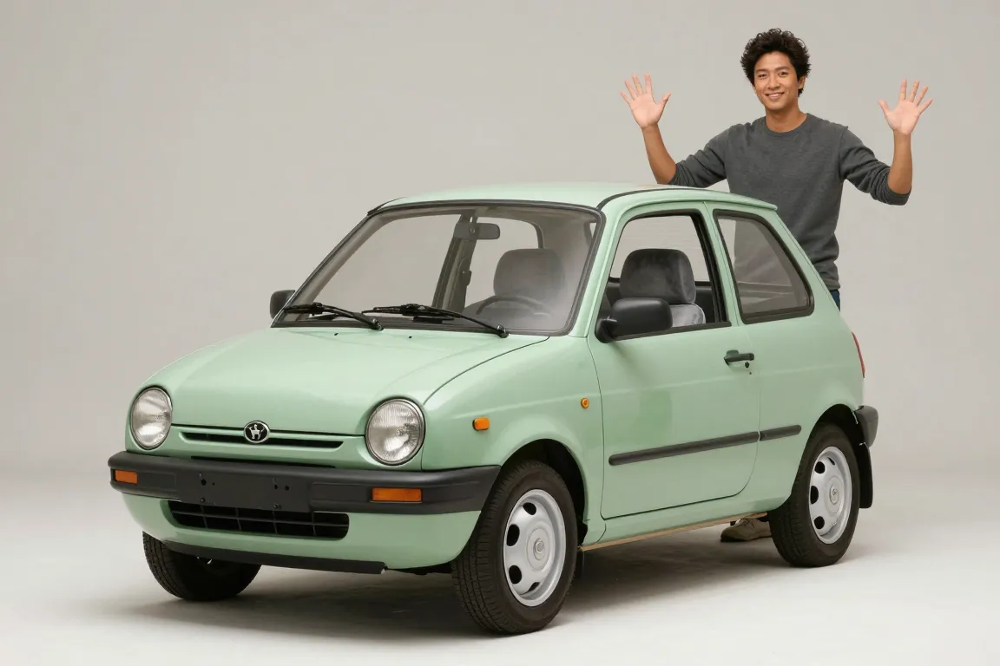

mote · 1990–2002 · også: Biodesign, Jellybean-bil, Organisk bil
Den myke, organiske bilen fra 1990-årene. En avrundet enromskarosseri med et ovalt ansikt, støtfangere i karosserifarge og store, klare lykter. Kupeen er av mykt stoff og buet plast.

Kjerneidé
En bil for hverdagen har formene til en plante eller et dyr. Den er rund, glatt og vennlig, uten harde kanter og uten tegn til en maskin.
Designprinsipper
Rund hvert hjørne med en radius på minst 15 cm, og la støtfangerne gå inn i karosseriet.
Mal støtfangerne og sidespeilene i karosserifargen.
Form ansiktet som en oval eller et smil, med store, klare, buede lykter.
Løft taket til en boble for å gi en høy, åpen kupé.
Kutt antallet karosseripaneler, og hold fugene tynne og jevne.
Form dashbordet i myke kurver, i tofarget plast, med runde luftdyser og en enkelt buet instrumentpute.
Trekk setene med et lyst, mykt strikkestoff eller velur i et lekent mønster.